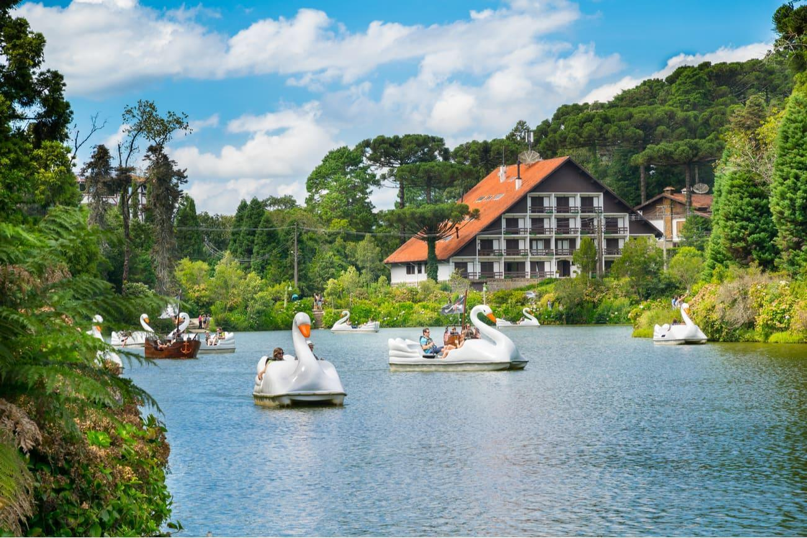

GRAMADO
MENU

Historia de Gramado
-
Gramado é uma cidade marcada pelas colonizações alemã, italiana e portuguesa, cujos traços culturais estão presentes na hospitalidade, beleza, qualidade de vida e desenvolvimento que transformaram a vila construída por volta de 1875 na acolhedora cidade de nossos dias. A 'Suíça Brasileira', assim chamada por seu clima temperado, arquitetura típica e manifestações culturais, tem no turismo a base da economia, e ostenta com orgulho o título de segundo destino turístico no País. A indústria, marcadamente a partir dos anos 50, criou ciclos de riqueza nas áreas do calçado, mobiliário, malhas e confecções, além do delicioso chocolate caseiro que, acompanhado da gastronomia e dos serviços hoteleiros, encantam visitantes e orgulham seu povo.

Economia de Gramado
- A vocação da cidade, desde o início do século 20, tem sido o turismo, apoiado nas inúmeras belezas naturais e na criação de eventos, entre eles um dos mais conhecidos do Brasil, o Natal Luz.

Turismo
- Em Gramado tudo conspira para que se desfrute de momentos de puro aconchego e prazer. Seus diferenciais, que a tornam única, estão por toda parte, principalmente na sutileza e no charme dos seus detalhes.
Referencia